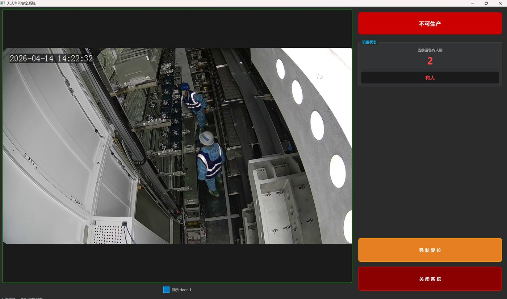
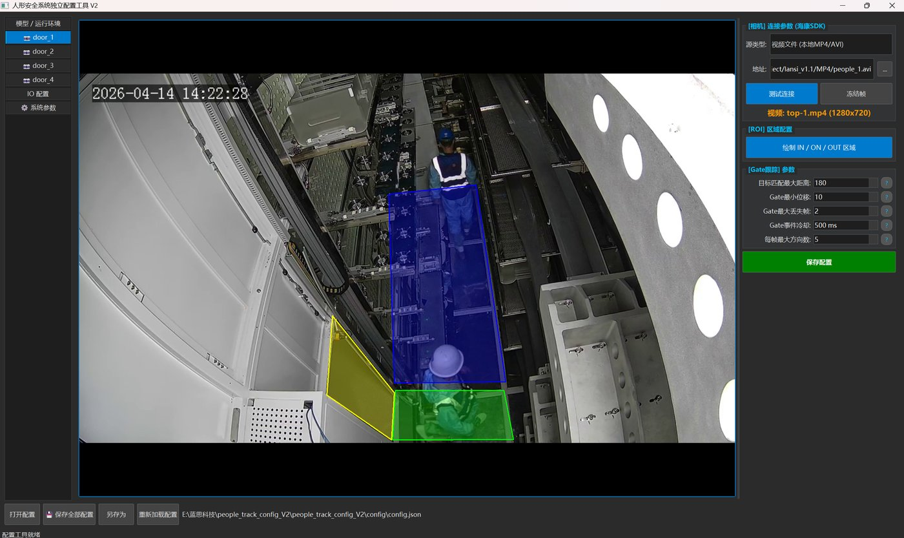

01
已商用上线
无人车间人形安全防护系统 实时
多路工业相机 + YOLOv8 人员检测，检测到人就锁停设备——安全系统只允许「宁可误锁，不可误开」
面向无人车间的安全防护系统：机械臂等自动化设备运行时，一旦检测到人员进入设备区域，系统立即输出锁机信号停止设备，避免人员伤害。 我在项目中负责 YOLOv8 人员检测模型的训练与调优、检测与跟踪算法、多路相机的实时推理调度、安全状态机与上位机软件开发，并完成 CPU（2 路）/ GPU（4 路）两套现场版本的交付上线。
- 检测与实时调度：YOLOv8 单类人员检测（conf 0.3 / NMS 0.5），2–4 路 1280×720 工业相机并发；推理按「只保留最新帧 + 轮询公平调度 + batch=1」组织，不等待凑批，避免高帧率相机饿死其它路与旧帧堆积
- 多后端部署：以 ModelFactory 统一 backend 与模型协议，同一套业务链可在 PyTorch（CUDA / CPU）、ONNXRuntime CPU、算能 Sophon NPU（bmodel）之间切换，现场按算力选版本
- 区域与方向判定：多边形 ROI 划分 ON / IN / OUT 三区，门区短轨迹状态机按位移投影（可叠加拓扑得分）判定 ENTER / LEAVE，对检测抖动与丢帧容错，输出设备内实时人数与进出净流量
- Fail-Safe 安全链路：STARTUP_LOCK / PERSON_LOCK / FAULT_LOCK / UNLOCK 状态机——启动默认锁机、检测到人保持锁机、相机 / 推理 / 跟踪 / 计数 / IO 任一模块心跳超时即判故障并强制锁机；复位需同时满足「无人 + 无故障 + 模块健康」并在执行前二次复查
- 时延验收与工控联锁：端到端以 T0 相机取帧 → T1 继电器写入成功为口径、限值 200 ms，拆成 acquire / scheduler / infer / rule / safety / io 六段统计 p95 / p99 与合格率；锁机经 Modbus RTU 继电器输出并保留 DI 软复位，IO 侧 3 次重试 + 死信队列 + 紧急锁机回调

